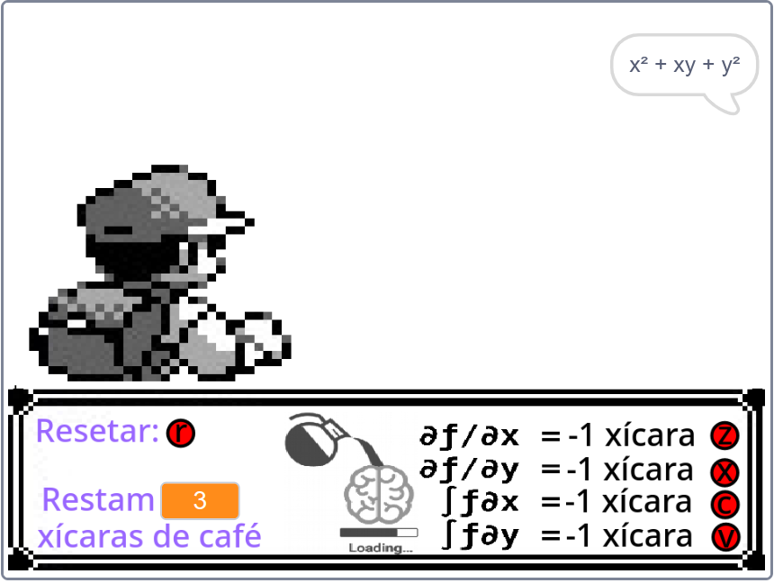
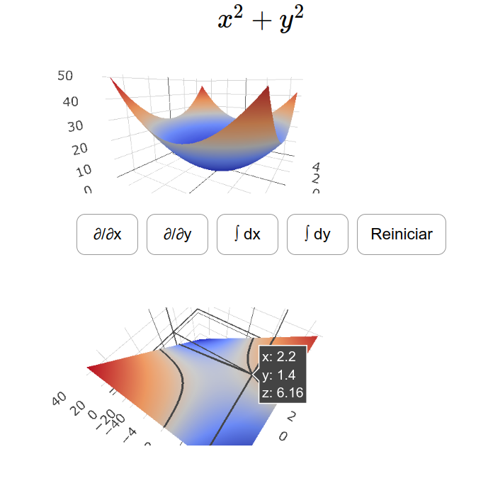

Geração I
Laboratório Integrável é um hub para recursos virtuais, abertos, de Ciências e Matemática, de autoria neurodivergente.
Este projeto surge a partir do meme "a wild function appears" e suas três variações mais usuais. Esse meme coloca num cenário típico dos jogos de pokemon para gameboy, o protagonista se encontrando com uma função e derivando-a. Porém as consequências dessa ação variam de acordo com a derivada utilizada e a função em questão. A ideia desse trabalho que começou como uma estrutura para jogo de tabuleiro, e depois se desenvolveu para aplicações virtuais, era construir um sistema de batalha baseado nas transformações diferenciais de Integrar ou Derivar uma função.

Geração I

Geração II